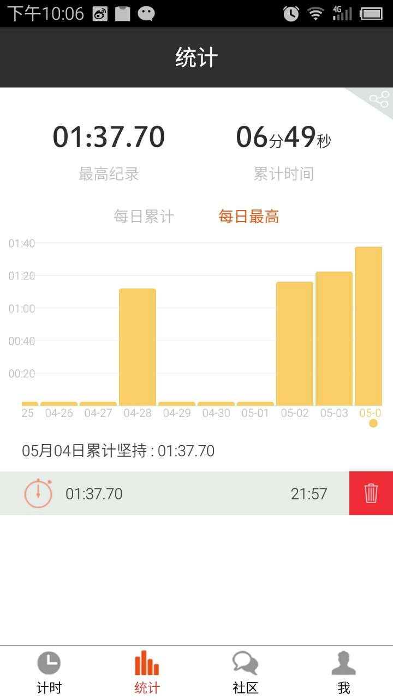
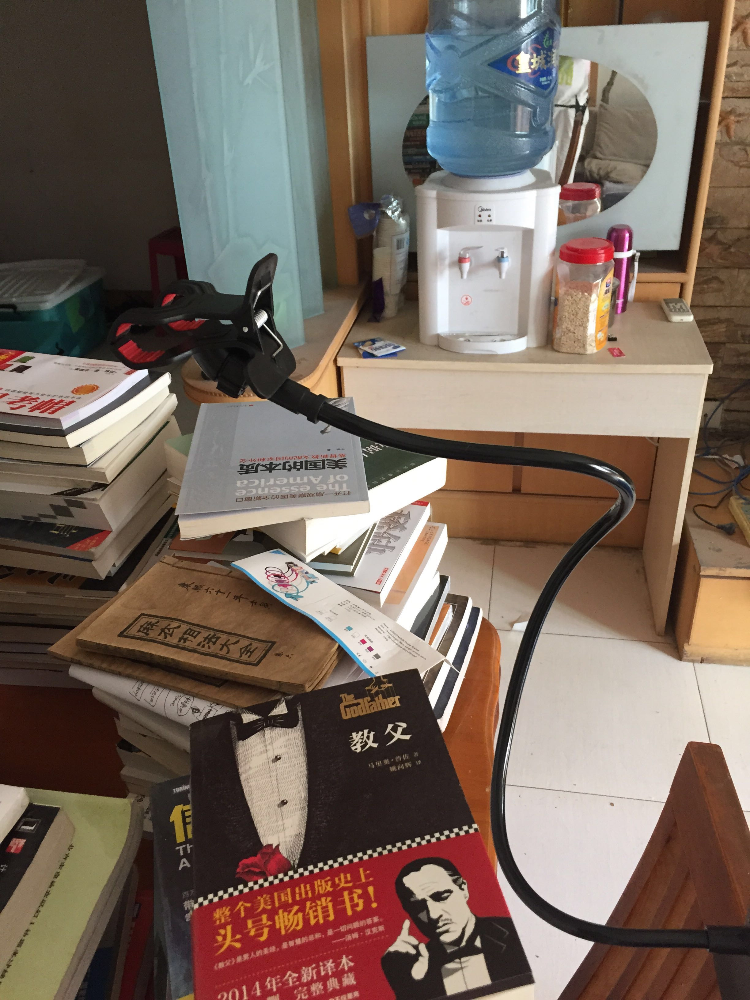
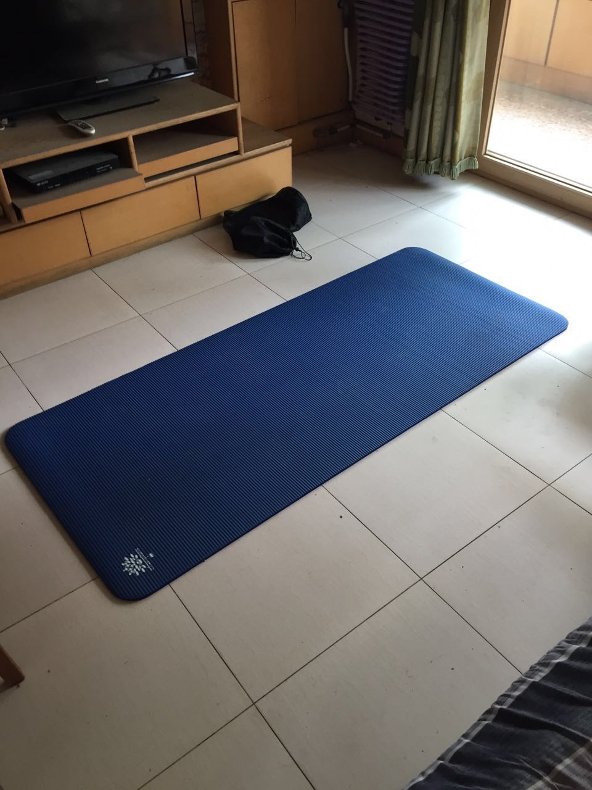
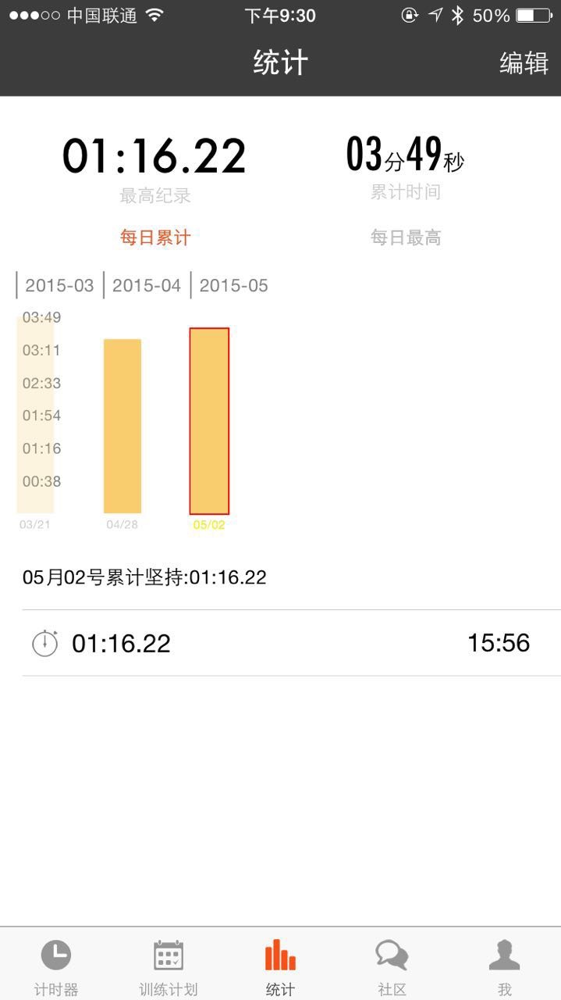

今天是我100天行动计划的第5天
结果：
未能达到平均水平……所以无图了
总结
今日表现太糟糕了，原因有两个：
1、10点半才到家，实在是太累了。
2、昨天只睡了五个小时，而且对于昨天的成果盲目自信，没做好充分的准备就开始plank……
3、下次应该早上拍视频
证据
视频请访问我的公众号观看
其它
欢迎扫描二维码订阅我的微信公众号
 


今天是我100天行动计划的第5天
未能达到平均水平……所以无图了
今日表现太糟糕了，原因有两个：
1、10点半才到家，实在是太累了。
2、昨天只睡了五个小时，而且对于昨天的成果盲目自信，没做好充分的准备就开始plank……
3、下次应该早上拍视频
视频请访问我的公众号观看
欢迎扫描二维码订阅我的微信公众号


今天是我100天行动计划的第5天
未能达到平均水平……所以无图了
今日表现太糟糕了，原因有两个：
1、10点半才到家，实在是太累了。
2、昨天只睡了五个小时，而且对于昨天的成果盲目自信，没做好充分的准备就开始plank……
3、下次应该早上拍视频
视频请访问我的公众号观看
欢迎扫描二维码订阅我的微信公众号


今天是我100天行动计划的第4天
结果：1分43秒，再次刷新记录，比昨天多10秒
 

今日表现堪称完美，下次平板撑之前应该可以多说点段子缓解下女粉丝看到我时候的紧张心情
视频请访问我的公众号观看，虽然广大女粉丝的要求，我露腹肌，但考虑到还有未成年小朋友观看，下次面基的时候给你们看吧。
欢迎扫描二维码订阅我的微信公众号


 

如果大家有在电脑上写文字的需求，那么大家一定会使用过Office，相信大多数同学们在用office的时候，为了产生版式漂亮的文档，会花费大量的时间反复对格式进行调整。我仔细计算过，格式的最终调整至少会花掉写文档10%的时间，而这10%的时间是否可以节省下来呢？本文要介绍的markdown,就是为了减少文字工作者花费在排版上时间，专注于写作本身而设计产生的一种标记语言。学会了它，当你啪啪啪的在键盘上敲完你想要写的文章以后，你的这篇文章就已经排版好了，是不是很神奇？说到语言，大家（尤其是文科生）可能会有些恐惧，我向你保证，这个语言相当之好学，五分钟即可入门。
以我个人的学习经历来看，任何一样东西，最开始的时候，只需要学习三板斧即可，快速生存下来才是最重要的。所以，我在这里只介绍几个最常用的markdown语法（以下示例软件为mac下的markdown编辑器MacDown），具体较为复杂的语法可以戳底下的链接查看（其实真的很简单）
下面的软件是Mac下的markdown文本编辑器:
 

左边是使用markdown语法写出来的，右边是markdown自动排版出来的显示效果。
一个”#”号值的是一级标题，两个”#”号是二级标题，三个”#”号是三级标题
 

这是正文内的一些markdown的语法格式
好了，学会了这些，你接下来用Markdown来写文章了！如果需要插入图片，插入表格，可以再参考1，此处就不再多说了，链接最底下链接处会有。
在上面的语法说明中，相信你已经学会了markdown,那么接下来，我们就可以用markdown来写作了！理论上任何的编辑器都可以写markdown(写完之后再转换成你需要的格式就行)，但还是有一些专门为markdown设计的编辑器，可以让你在写作的时候，实时的看到你写的文章的排版。
以下是各个不同的平台我推荐的markdown编辑器：
任何一个产品，不谈使用场景都是耍流氓，以下就是markdown使用的一些典型场景
文件内容的排版
如果是需要PDF版本的，我们一般都可以用markdown的编辑器直接导出成PDF,发给别人，如果是office版本的稍微麻烦一点，只需要把排版好的部分全选，复制一下，就可以直接带格式粘贴到office内！
在网上发邮件、发帖的排版
用markdown写完以后，直接使用markdownhere插件，即可生成带格式的文章（本人微信号即使用此种方法）
1、markdown语法: http://wowubuntu.com/markdown/
2、markdown pad: http://markdownpad.com/
3、macdown: http://macdown.uranusjr.com/可回复macdown查看我写的关于macdown的文章
4、 http://www.apprcn.com/markdown-here.html
暂无
本文首发于我的网站: http://xumengyang.com ,由本人投递到各个渠道。
转载请保留所有内容。
原始链接：http://xumengyang.com/markdwon.html
欢迎扫描二维码订阅我的微信公众号

今天是我100天行动计划的第3天
结果：1分32秒，比昨天多10秒


今日失误：
1、刚吃完饭就撑
2、倒地的时候忘了关计时器，多算了5秒
视频最好是访问我的公众号观看：http://www.weishi.com/t/2002563092611563
今日应广大女粉丝的要求，露出了帅脸
欢迎扫描二维码订阅我的微信公众号


今天是我100天行动计划的第2天

结果：1分22秒

今日失误：
1、做之前没有做好热身工作
2、拍视频的时候没有露出我那俊俏的脸庞
视频请访问我的公众号
欢迎扫描二维码订阅我的微信公众号


 

刚看完一本管理的书，书名很有意思，叫做《别让猴子跳回背上》，主要说的是管理人员如何安排好自己下属的任务，继而达到解放自己的目标。
我结合了自己曾经遇到过的问题，简单的做了一个读书笔记。
关于猴子的意思，书中给了其定义：
猴子不是问题、项目、计划或机会；猴子只是解决问题、进行项目计划或是投入机会的下一个步骤、下一个措施、下一个行动步骤
在说我遇到的问题之前，我想先说一个概念，叫做质量的上游控制，也就是说，一个公司里面最重要的，其实并不是最底下干活的那些小喽啰，而是制定团队运作的规范，并对团队运作情况进行最终把控的人。
我理解的产品经理，在一个团队中就应该扮演这样质量控制的角色，而具体在流程内拆分的话，产品应该同时会负责两个方面的工作：
1、完成上级安排的，自己需要完成的上游工作，包括：产品的设计，运维规则的制定，团队工作流程，方法论的制定，等等
2、协调资源，妥善的安排下游(研发，测试，美工)的工作
很显然，对于产品来说，最重要的KPI就是最终的产出，所以说对下游的掌控，应该是产品研发过程中最重要的一件事，而这本书就说了如何在团队管理中，给所有的人安排合理的工作：
我刚开始做产品的时候就经常犯这样的一个错误,每当我一开始干活，运营的同学就会跑过来告诉我，系统出现问题了！我就豪爽的说：”给我先看看吧！”
，然后我噼噼啪啪写了半天的SQL，写几个测试用例，事情还没做完，然后又有另外一个业务方跑过来找我，我们要导一些数据！我又大气的说：”给我看看吧！”，然后看他们给的数据表样不够规范，又去找他们要规范的表样，然后这样的事情一天就要来好几次，搞得我一天啥事就干不了了。最可气的是，提出问题的人没有其他事情可做，站在我的后面失望的看着我，不停催着我说：”梦阳，啥时候把结果给我！别人都催了我好几遍了！”
我白天没法做自己的工作，到了晚上回家，事情又多的做不完，总是觉得对不起同事对自己的信任，只好不停的熬夜干活，而精力不够的情况下做出东西的质量就可想而知了，又被所有人骂一通，直到后来我在被折磨的要死的之后才明白：这里很多问题其实并不是我应该去做的。
我去做了，反而阻碍了事情的正常发展。
这本书里面也提到了避免这种现象出现的方法：
首先应该弄清的问题是：问题是什么？以及谁有问题？问题属于谁？如果他们认为问题是你的，那么谁要负举证责任？你抑或他们？举证责任永远由他们负责。如果他们不能证明问题是你的，那么，问题又该归谁所有?他们。
也说了这样做对于下游员工和团队的坏处：
如果你期待员工在一个相辅相成的团队中，能够独当一面，千万不要帮他们做他们分内的事。
然后又解释了这个问题发生的原因：
为什么部属会向我们提出问题?因为一旦他们认为，自己的上司容易上当——是个解决问题的高手——态度便会趋于”让他自己选择”，于是自己撒手不管。这并不表示这些员工很恶劣，但他们确实喜欢让上司去背他们的猴子。
就如同我当时的状况一样：
无法进行下一个步骤的原因是，我把时间放在应付老板与公司的要求上。为了达成这些任务，我需要可支配时间，但因为被这些猴子团团缠住，根本无法拥有个人的时间。我真是陷入无法自拔的恶性循环中。我终于领悟到，他们的挫折来自于把所有任务都交付给我，而我的罪恶感来自于，我从来无法赶上进度。
我给人安排工作的时候，往往会犯这样一个错误：比如说出现了某个bug，我会找到研发并告诉他，系统出现问题了，麻烦找出系统的问题，并及时修复，往往事情说完以后，研发都很负责的答应我帮我解决……然后，就没有然后了，这就造成了很多事情我都没法去在上级指定的时间内完成。这种问题当然研发也有责任，但最重要的是我，安排任务的时候出现了问题。
后来leader告诉我说，指定一个任务，必须要给出交付的时间节点，交付的内容，即预期输出，到验收的时候检查其实际输出，并与之对比，监督结果，我当时没有意识到问题的严重性，看了这本书，突然又想起了leader跟我说的，顿时感觉无地自容。
书中提到了预期交付时间节点的作用：
我很确定你知道为何我将会议时间写在工作日程上。这不是为了恐吓，只是要他知道明天约定的确切时间，如果过了这个时间，他若是没有出现，或是两手空空地出现，那么，他就是一个不服从的部属。我必须重申一遍，要求部属出现，要求他在会议上有工作成果报告，这是相当合理的要求。
先安排讨论时间是为了减少延误的可能性。何以如此?因为部属会重视你要检查的东西，而不是你期待的每件事。如果没有约好喂食猴子的时间表，延迟的情况可能会发生。没有约定，就不可能有迟到的情况，如果不可能迟到（紧接着是处罚），行动的压力也会随之减弱
检查工作的时候所用的方法：
“很简单。我们可分三部分来进行。首先，你可以解释，如果你有进度的话，现在会是什么状况。第二点，你可以解释目前的状况，也就是毫无进展的情况。你再用第一点减掉第二点，谈谈这个得出来的结果。那就’‘无进度’的报告方式，而且我坚持要这样做， 因为缺少进度和进度对公司一样重要。”
注 预期输出和实际输出的对比
为什么不管结果如何，一定要在指定的时间进行review:
这些终将回归到一个基本的领导原则，即职责总是以时间为优先，而非准备就绪。这一点攸关管理工作的慨念。项目的完成时间遭到延误是一回事，但过程中，怠忽职守便是另一回事。
注 时间节点的把控
书中也提到了，一个公司，最重要的就是产出，承诺并不能产生任何影响，最终的输出才是最最关键的：
企业应以活动为导向。没有因就没有果。没有活动，也不会存结集。光对结果有所承诺，其成就不会比新年愿望高出多少，而且还会留下恶劣的记录。
然而有些人还心存奇怪的信念， 以为只要对某件事情赋予深切的承诺，承诺自然会实践。强调目标而忽略行动的人，根本就是无视于因果关系的科学原则。他们认为目标等于原因，而结局就是结果。
对九个月以后的事情下承诺，期待届时会有成果是一回事；至于承诺要在今天采取下一个步骤， 以增加达到成果的几率，那又是另外一回事。对目标有所承诺，不见得可以有效产生圆满的结果。只有针对完成目标采取的行动，才会有效达成结果。
书中还提到了，如何去避免产生太多任务让被安排任务的同事生疲劳以至于无法处理完任务，我个人觉得，可以在对工作进行review的时候，对这些内容进行调整，所以这里也就不多阐述了，大家可以自己去看看。
总的来说，这是一本非常有用的管理书籍，我给打五星，推荐大家阅读，希望大家早日移走自己身上的猴子……
暂无
欢迎扫描二维码订阅我的微信公众号


今天是我100天行动计划的第一天，当然要坚持了，写今日坚持结果之前，先给大家普及一下什么是plank：
平板支撑（plank），如下图所示：它是一种类似于俯卧撑的肌肉训练方法，在锻炼时主要呈俯卧姿势，可以有效的锻炼腹横肌，被公认为训练核心肌群的有效方法。

为了做plank，我还特地买了一个瑜伽垫：

战斗才刚刚开始，今日坚持1分16秒
我用这个软件来记录：挑战Plank

但是这个软件自己坚持的时间是可以作假的，我要是抵赖了大家也不知道，所以我看能不能买个固定手机的装备，于是俺找到了这个，明天到货，以后大家就可以继续看到我在视频里面表演啦！欢迎继续关注！

今日没啥感想，1分16秒很轻松，我稍微耍了一个小小的滑头，留了一点余量，不过我可是要坚持到10分钟的，大家还是先原谅我吧，阿西吧！感谢大家支持！